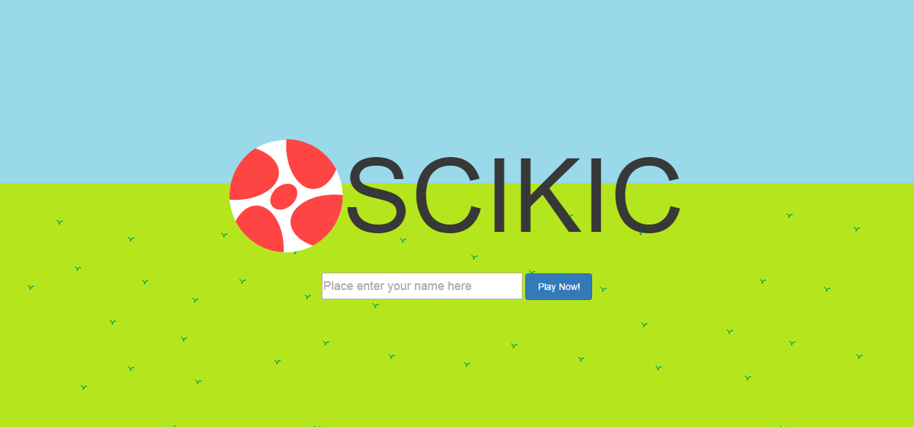
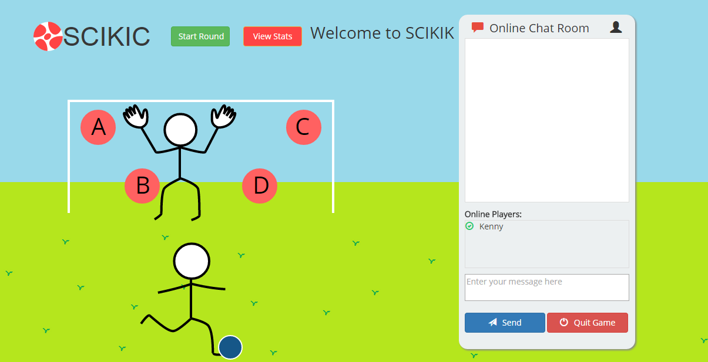

About
I am in 2A Systems Design Engineering at University of Waterloo. I enjoy studying the interaction between human users and technology. I strive to create every website and product to be ergonomically fit and user-friendly to all users.
I have chosen this space theme because I believe that innovation is just like the outer space which is always expanding and knows no bound.
Skills
Languages I Know
- HTML5
- CSS3
- Javascript
- SQL
- C++
Experience
Toronto Water Integrated Technology Management Unit
Web Designer
Sept 2014 - Dec 2014
- Launched the Toronto Water Integrated Technology Management Unit's web presence project to provide the latest news and updates to other teams across Toronto Water Division
- Built the intranet website using HTML5, Javascript, CSS3 on Adobe Dreamweaver
- Developed an interactive KPI report database application on Oracle Application Express using SQL
- Designed the logo for the unit using Adobe Illustrator
- Produced diagrams and illustrations for KPI Report on Microsoft Visio
Ontario Ministry of Transportation
NGD Operational Analyst
Jan 2014 - May 2014
- Worked on the project release team to implement the New Generation Desktop Project across Road User Safety Division to successfully upgrade over 500 computers to Windows 7
- Provided critical liaison between RUS users and Infrastructure Technology Service
- Communicated with staff across Ontario to remediate and log issues
- Kept track of and reported on project progress with reports and spreadsheets
- Worked with the Ministry's IT Field Services to troubleshoot various proprietary software compatibility issues and resolved them under tight deadlines to avoid disruption to business
- Designed a SharePoint team site using CSS and released it to various branches as well as providing training to users
Tertec Enterprises Inc.
Electrical Engineering Assistant
Feb.2012 - Jun.2012
- Collaborated with technicians to successfully assemble an automatic system tester for Tesla Motors
- Built electrical cables of different gauges for the testers
- Soldered intricate electrical components on circuit boards as indicated on circuit schematics
- Catalogued various types of resistors for inventory
- Completed assigned tasks punctually and independently with minimal supervision
Projects
SCIKIK
SCIKIK is an educational game for students to study and prepare for tests while playing a soccer game. My partner and I developed this during the 48 hour Global Koding Hackathon.
 Available on Github
Education
Candidate for Bachelor of Applied Science
Systems Design Engineering, Honours, CO-OP Program, University of Waterloo Sept. 2013 - present
Relevant Courses:
- SYDE 162 - Human Factors in Design
- SYDE 181 - Statics
- SYDE 182 - Dynamics
- SYDE 121 - Digital Computation
- SYDE 192 - Digital Systems